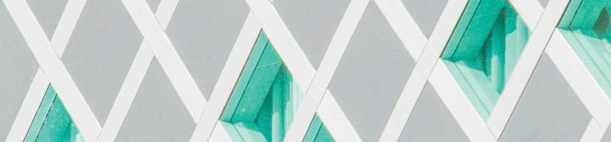

Use base R’s list2env() function to assign list elements to variables in an environment

Motivation
Today I learned base R’s list2env() function can be used to assign a set of variables to the Global Environment.
For a personal project, I was creating a simple CRUD application using Shiny. The purpose of the application was pretty straightforward: to serve as a tool for entering data into a database. The app had the following requirements:
- Provide inputs as fields for users to enter data that will be stored in a database.
- Display entered data via the user interface for easy visual inspection before writing data to the database.
- Include a ‘Submit’ button for the user to submit the data to the database.
On the back end of this simple app, data was stored in the Global Environment as a tibble, so it could be easily displayed via the application’s UI. The tibble only contained one row of data, where the values in the variable were to be written via a SQL INSERT statement upon the user hitting a ‘Submit’ button.
While working on this part of the app, my initial approach confronted me with a code smell.
This approach stinks
The additional nuances of the Shiny application are not important. Rather, let’s focus on the actual problem I was confronted with: how do you create Global Environment variables from an existing object, specifically a tibble in my case?
Here’s some example data to work with:
data_employee <- tibble(
first_name = "John",
last_name = "Smith",
start_date = "2024-03-04",
department = "accounting"
)At this point, there is one object in the Global Environment, data_employee. To prove this, let’s submit ls() to the console, which will print all the objects in our current Global Environment.
ls()[1] "data_employee"What if I also wanted the tibble’s variables to be their own objects? That is, I wanted code resulting in four objects being made available in the Global Environment, each containing a value from a variable in the tibble: first_name, last_name, start_date, and department.
My overall aim in doing this was to pass the values of these variables to a SQL INSERT statement using the glue() package:
query_insert <- glue("
INSERT INTO employees (
first_name,
last_name,
start_date,
department
)
VALUES (
{first_name},
{last_name},
{start_date},
{department}
)
")My initial solution was to do this:
first_name <- data_employee[["first_name"]]
last_name <- data_employee[["last_name"]]
start_date <- data_employee[["start_date"]]
department <- data_employee[["department"]]Indeed, we can confirm this works by once again submitting ls() to the console.
ls()[1] "data_employee" "department" "first_name" "last_name" "start_date" Further confirmation results from inspecting the SQL INSERT statement string outputted from our use of the glue() function.
query_insert <- glue("
INSERT INTO employees (
first_name,
last_name,
start_date,
department
)
VALUES (
{first_name},
{last_name},
{start_date},
{department}
)
")
query_insertINSERT INTO employees (
first_name,
last_name,
start_date,
department
)
VALUES (
John,
Smith,
2024-03-04,
accounting
)This approach, though it works and isn’t too cumbersome for this specific example, it stinks and feels off. This especially became apparent when writing this out for the 10 fields of data I wanted to store within a database. I even physically cringed when I implemented it within the context of my application. There had to be a better way.
Let’s start fresh by clearing the Global Environment, but keep our data_employee tibble to try another approach:
I wouldn’t do this in my actual code. But I’m doing it here to better highlight the example.
Base R’s list2env()
list2env() was the solution I was looking for. Here’s the description from the function’s documentation:
From a named
list x, create anenvrionmentcontaining all list components as objects, or “multi-assign” fromxinto a pre-existing environment.
A little esoteric, so I found the following resources to be quite helpful:
Environments are an advanced topic, though a little context is helpful. Environments are just like any other data structure in R, but they serve as fenced object containers that can hold objects (my shallow interpretation). The Global Environment is one such container that can hold objects for an R session, though additional named environments could be created. As such, list2env() provides functionality to write named objects stored from a list to any environment we specify. Review Chapter 7: Environments from the Advanced R book for additional detail.
Using these concepts and list2env(), here’s how I fixed my code smell:
list2env(data_employee, .GlobalEnv)<environment: R_GlobalEnv>ls()[1] "data_employee" "department" "first_name" "last_name" "start_date" query_insert <- glue("
INSERT INTO employees (
first_name,
last_name,
start_date,
department
)
VALUES (
{first_name},
{last_name},
{start_date},
{department}
)
")
query_insertINSERT INTO employees (
first_name,
last_name,
start_date,
department
)
VALUES (
John,
Smith,
2024-03-04,
accounting
)🤯.
What was once ~10 lines of messy, smelly code is now a one-liner. I was shook upon learning this.
Wrap up
The takeaway from this TIL is a game changer: use list2env() if you need to convert existing list elements into objects in your Global Environment. I certainly was witness to its utility when trying to solve my own code smell. I hope you can find a use for it in your own work.
Until next time, cheers! 🎉
Reuse
Citation
@misc{berke2024,
author = {Berke, Collin K},
title = {Use Base {R’s} `List2env()` Function to Assign List Elements
to Variables in an Environment},
date = {2024-12-30},
langid = {en}
}